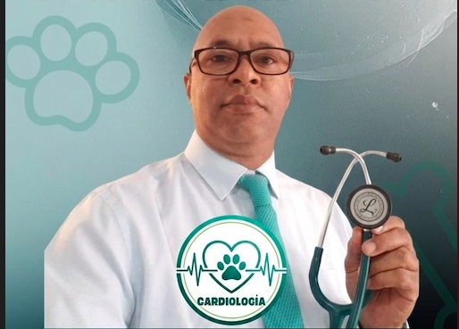

Diagnóstico preciso y cuidado cardiovascular integral para la salud y longevidad de tu compañero.

Especializado en la evaluación, diagnóstico y tratamiento integral de patologías cardiovasculares en pequeños animales (caninos y felinos), enfocado en brindar una mejor calidad de vida a cada paciente.
Monitoreo cardíaco y procedimientos diagnósticos de alta precisión.
Evaluación ultrasónica detallada de la estructura interna y dinámica del corazón en tiempo real.
Análisis de la actividad eléctrica cardíaca para la detección de arritmias y trastornos del ritmo.
Valoración de riesgo cardiovascular previo a procedimientos quirúrgicos y de anestesia.
Atención previa cita en Santo Domingo, República Dominicana.
809-965-6776
Dr. Pericles Marte
Plaza David, Av. Rómulo Betancourt 419